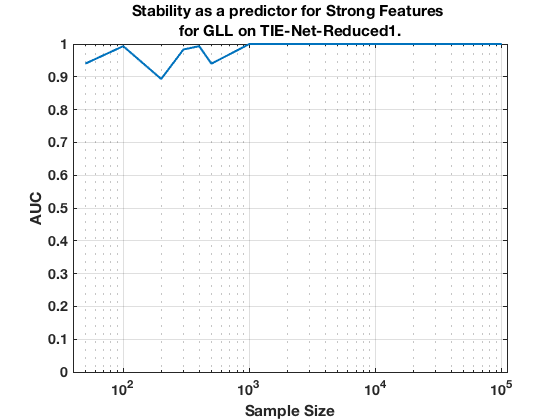

TIE-Net-Reduced1. Summary. GLL.
summary_stability_type("RedNet", 1)
TOTAL COUNTS: Total=35, Strong=5, Weak=26, Irrelevant=4
Figure 37. Stability as a predictor for Strong Features for GLL on TIE-Net-Reduced1.
_____________________________________________________________________________________

Table 37. Breakdown of Stability by Feature Type for GLL.
__________________________________________________________
(1) Number Features Repeat (n_fs_rep): number of unique features that were selected in a repeat
(2) Number Features Fold (n_fs_fold): number of unique features that were selected in a fold
(3) Feature Stability ~ Feature Selection Frequency
Sample_Size All_n_fs_rep All_n_fs_fold All_Stability
___________ _____________________ _____________________ ___________________
' 50 ' ' 3.360 +/- 0.028 ' ' 1.410 +/- 0.008 ' ' 0.040 +/- 0.088 '
' 100 ' ' 3.440 +/- 0.029 ' ' 1.586 +/- 0.010 ' ' 0.045 +/- 0.103 '
' 200 ' ' 3.180 +/- 0.033 ' ' 1.614 +/- 0.010 ' ' 0.046 +/- 0.146 '
' 300 ' ' 3.020 +/- 0.025 ' ' 1.692 +/- 0.010 ' ' 0.048 +/- 0.162 '
' 400 ' ' 4.380 +/- 0.028 ' ' 2.142 +/- 0.011 ' ' 0.061 +/- 0.159 '
' 500 ' ' 3.820 +/- 0.030 ' ' 2.040 +/- 0.011 ' ' 0.058 +/- 0.170 '
' 1000 ' ' 4.440 +/- 0.029 ' ' 2.424 +/- 0.012 ' ' 0.069 +/- 0.184 '
' 2000 ' ' 4.980 +/- 0.030 ' ' 3.050 +/- 0.012 ' ' 0.087 +/- 0.219 '
' 5000 ' ' 6.200 +/- 0.029 ' ' 3.946 +/- 0.011 ' ' 0.113 +/- 0.250 '
' 10000 ' ' 6.340 +/- 0.028 ' ' 4.548 +/- 0.009 ' ' 0.130 +/- 0.297 '
' 100000 ' ' 6.180 +/- 0.022 ' ' 5.262 +/- 0.007 ' ' 0.150 +/- 0.345 '
Sample_Size Strong_n_fs_rep Strong_n_fs_fold Strong_Stability
___________ _____________________ _____________________ ___________________
' 50 ' ' 1.600 +/- 0.016 ' ' 0.892 +/- 0.007 ' ' 0.178 +/- 0.192 '
' 100 ' ' 1.600 +/- 0.015 ' ' 1.068 +/- 0.007 ' ' 0.214 +/- 0.220 '
' 200 ' ' 1.560 +/- 0.015 ' ' 1.134 +/- 0.004 ' ' 0.227 +/- 0.366 '
' 300 ' ' 1.560 +/- 0.012 ' ' 1.248 +/- 0.007 ' ' 0.250 +/- 0.402 '
' 400 ' ' 2.160 +/- 0.014 ' ' 1.466 +/- 0.008 ' ' 0.293 +/- 0.367 '
' 500 ' ' 1.980 +/- 0.016 ' ' 1.522 +/- 0.010 ' ' 0.304 +/- 0.394 '
' 1000 ' ' 2.580 +/- 0.014 ' ' 1.926 +/- 0.010 ' ' 0.385 +/- 0.376 '
' 2000 ' ' 3.180 +/- 0.014 ' ' 2.466 +/- 0.009 ' ' 0.493 +/- 0.405 '
' 5000 ' ' 4.040 +/- 0.010 ' ' 3.270 +/- 0.009 ' ' 0.654 +/- 0.319 '
' 10000 ' ' 4.680 +/- 0.009 ' ' 4.138 +/- 0.008 ' ' 0.828 +/- 0.192 '
' 100000 ' ' 4.960 +/- 0.004 ' ' 4.912 +/- 0.005 ' ' 0.982 +/- 0.038 '
Sample_Size Weak_n_fs_rep Weak_n_fs_fold Weak_Stability
___________ ___________________ ___________________ ___________________
' 50 ' ' 1.440 +/- 0.023 ' ' 0.442 +/- 0.010 ' ' 0.017 +/- 0.015 '
' 100 ' ' 1.660 +/- 0.023 ' ' 0.460 +/- 0.008 ' ' 0.018 +/- 0.014 '
' 200 ' ' 1.300 +/- 0.027 ' ' 0.388 +/- 0.009 ' ' 0.015 +/- 0.011 '
' 300 ' ' 1.160 +/- 0.024 ' ' 0.338 +/- 0.009 ' ' 0.013 +/- 0.011 '
' 400 ' ' 1.980 +/- 0.025 ' ' 0.590 +/- 0.009 ' ' 0.023 +/- 0.013 '
' 500 ' ' 1.640 +/- 0.024 ' ' 0.446 +/- 0.007 ' ' 0.017 +/- 0.014 '
' 1000 ' ' 1.740 +/- 0.026 ' ' 0.454 +/- 0.009 ' ' 0.017 +/- 0.017 '
' 2000 ' ' 1.520 +/- 0.023 ' ' 0.516 +/- 0.010 ' ' 0.020 +/- 0.017 '
' 5000 ' ' 2.060 +/- 0.028 ' ' 0.632 +/- 0.011 ' ' 0.024 +/- 0.021 '
' 10000 ' ' 1.600 +/- 0.026 ' ' 0.390 +/- 0.008 ' ' 0.015 +/- 0.019 '
' 100000 ' ' 1.100 +/- 0.020 ' ' 0.306 +/- 0.008 ' ' 0.012 +/- 0.017 '
Sample_Size Irrelevant_n_fs_rep Irrelevant_n_fs_fold Irrelevant_Stability
___________ ___________________ ____________________ ____________________
' 50 ' ' 0.320 +/- 0.012 ' ' 0.076 +/- 0.004 ' ' 0.019 +/- 0.011 '
' 100 ' ' 0.180 +/- 0.009 ' ' 0.058 +/- 0.004 ' ' 0.015 +/- 0.008 '
' 200 ' ' 0.320 +/- 0.012 ' ' 0.092 +/- 0.004 ' ' 0.023 +/- 0.008 '
' 300 ' ' 0.300 +/- 0.010 ' ' 0.106 +/- 0.005 ' ' 0.027 +/- 0.028 '
' 400 ' ' 0.240 +/- 0.011 ' ' 0.086 +/- 0.005 ' ' 0.022 +/- 0.016 '
' 500 ' ' 0.200 +/- 0.010 ' ' 0.072 +/- 0.004 ' ' 0.018 +/- 0.006 '
' 1000 ' ' 0.120 +/- 0.008 ' ' 0.044 +/- 0.005 ' ' 0.011 +/- 0.012 '
' 2000 ' ' 0.280 +/- 0.010 ' ' 0.068 +/- 0.003 ' ' 0.017 +/- 0.010 '
' 5000 ' ' 0.100 +/- 0.006 ' ' 0.044 +/- 0.004 ' ' 0.011 +/- 0.010 '
' 10000 ' ' 0.060 +/- 0.005 ' ' 0.020 +/- 0.002 ' ' 0.005 +/- 0.009 '
' 100000 ' ' 0.120 +/- 0.007 ' ' 0.044 +/- 0.003 ' ' 0.011 +/- 0.008 '